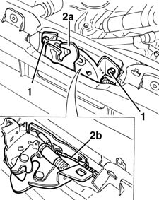
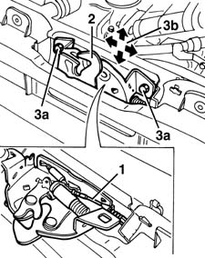

7025A34 bonnet lid lock (one) - r+r or repair
- Path
- Procedures > 70 FITTINGS > 7025 COMPARTMENT LIDS > 7025A LOCATION OF BONNET WIND NOISE > 7025A34 bonnet lid lock (one) - r+r or repair
- Kind
- repair procedure (removal / refitting; the operation number is the code)
- Applies to
- all engines; all production periods
- Interactive page
- https://sloeber94.github.io/elrnDB-fMltpl/en/#/2892136
Applies to: all engines; all production periods
 Removing
Removing
 Refitting
Refitting1. Open the bonnet and undo the bolts.
2. Move the catch (2a) over slightly and disconnect the operating cable (2b).
Remove the catch.

Applies to: all engines; all production periods
Refitting
RemovingCheck that the catch is undamaged.
1. Connect the operating cable to the catch.
2. Fit the catch.
3. Screw in the bolts (3a) without tightening them, and adjust the catch position. The arrows (3b) indicate possible movements.

Applies to: all engines; all production periods
Tighten the bolt to the specified torque.
 | Fastening | Component | Ø | Value (daNm) |
|---|---|---|---|---|
- | Bolt | BONNET LID LOCK/S | M6 | 0.6 - 1.2 |
Check that the catch and control system are working.